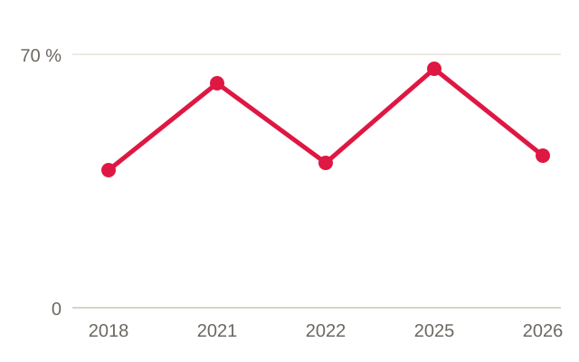
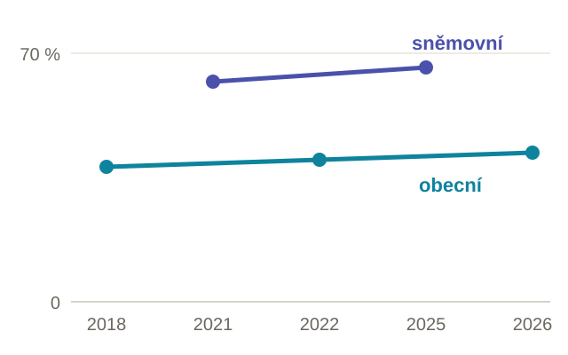
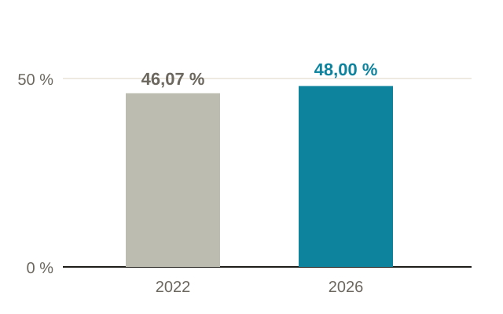
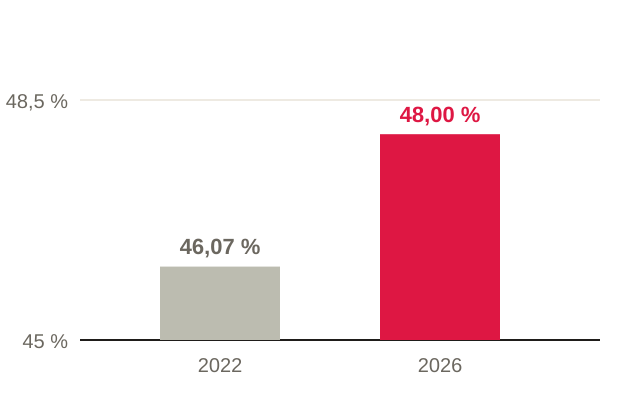

- Než otevřete nástroj, napíšete hlavní sdělení jednou větou. Graf pak tu větu dokazuje.
- Podle otázky vyberete typ grafu: srovnání, vývoj, podíl, rozdělení, vztah, nebo místo na mapě.
- Víte, co smíte při zjednodušování vypustit a co ne: osa, období, výjimky, nejistota.
- Graf popíšete tak, aby obstál sám, vytržený z článku: titulek, jednotky, přímé popisky, zdroj.
- Nakreslíte dvě varianty stejného zjištění a zdůvodníte, proč jste vybrali jednu z nich.
Na semináři 6. 11. Většinu času budete kreslit a stavět, ne poslouchat. Mějte po ruce papír a tužku. Tabulku z minula, pokud ji máte. Pokud ne, nevadí: zjištění si můžete vypůjčit z našich článků (viz část 5).
Hodnocení z minula. Co jste odevzdali za kapitolu 2, je ohodnocené v dokumentu v Moodle: pětky za hotové, 👋 tam, kde je ještě potřeba něco dokončit.
| Kolik | Co |
|---|---|
| 10 min | Kontrola přípravy: každý řekne svou větu (část 1) a ukáže ověřená čísla. |
| 10 min | Ukázka: jedno zjištění, dva grafy. Který vyhrál a proč. |
| 45 min | Dílna: dvě ruční skici a prototyp (část 5), průběžně konzultace se sdílením obrazovky. |
| 15 min | Redakční kontrola ve dvojicích: projdete si navzájem grafy podle seznamu v části 4. |
| 10 min | Opravy, uložení verze do Moodle a zápis do deníku rozhodnutí. |
1. Nejdřív věta, potom graf
Nejčastější chyba nevzniká v nástroji, ale před ním. Kdo otevře Datawrapper nebo Google Sheets s tabulkou a bez věty, kliká tak dlouho, až mu vyjde „nějaký graf“. Ten pak ukazuje všechno, a proto nic.
Začněte proto větou. Vezměte jedno ze zjištění, která jste minule ověřili, a napište ho tak, jak by stálo v titulku:
- Slabě: „Volební účast v okrsku 5 v letech 2006–2026“. To je popis tabulky, ne zjištění.
- Silně: „K obecním volbám chodí v našem okrsku dlouhodobě o čtvrtinu lidí méně než ke sněmovním“. Tahle věta říká, co má čtenář v grafu vidět.
Z věty plyne i to, co do grafu patří. Když tvrdíte „o čtvrtinu méně než ke sněmovním“, musí být v grafu vidět obojí, obecní i sněmovní volby. Když tvrdíte „nejnižší v okolí“, potřebujete okolí. Graf, který tvrzení nedokládá, je ilustrace, ne důkaz.
Jedno zjištění, jeden graf. Když máte tři zjištění, máte tři grafy, nebo jeden graf ve třech krocích (o tom víc v části 3). Nezkoušejte je nacpat do jednoho obrázku.
Kolik grafů je vůbec potřeba? Někdy žádný. Pokud máte dvě čísla, stačí věta: „Účast vzrostla ze 46,07 na 48,00 %.“ Pokud čtenář potřebuje najít přesnou hodnotu pro svou obec, poslouží líp tabulka s vyhledáváním. Graf se vyplatí, když má čtenář vidět vztah: co je víc, co roste, co se odchyluje.
Máte větu?
2. Jaký graf pro jakou otázku
Typ grafu se nevybírá podle toho, co vypadá hezky, ani podle toho, co nástroj nabídne jako první. Vybírá se podle otázky, na kterou má graf odpovědět. Otázek je málo, a tak je i málo základních typů. Rozklikněte si, která otázka je vaše:
Co je víc a co méně? (srovnání)
Pruhový graf (vodorovné pruhy), u několika málo kategorií i sloupcový. Pruhy seřaďte od největšího, ne podle abecedy. Dlouhé názvy (obcí, kandidátek) se do pruhového grafu vejdou, do sloupcového ne. Příklad: podíl hlasů kandidátek ve vaší obci.
Jak se to vyvíjelo? (vývoj v čase)
Spojnicový graf, u několika málo let i sloupce. Čas běží zleva doprava a roky mají na ose skutečné rozestupy: mezi roky 2018 a 2022 je stejná mezera jako mezi 2022 a 2026. Příklad: účast ve vašem okrsku v obecních volbách. Pozor na nesrovnatelné řady, o tom níž.
Z čeho se celek skládá? (podíl)
Skládaný pruh do 100 %, u dvou až tří částí i koláč. Koláč s osmi výsečemi nepřečte nikdo, oko neumí porovnávat úhly. Když chcete podíly porovnat mezi roky nebo obcemi, dejte vedle sebe několik skládaných pruhů. Příklad: ženy a muži v zastupitelstvu po jednotlivých volbách.
Jak jsou hodnoty rozložené? (rozdělení)
Histogram nebo bodový pás (každá obec jedna tečka na ose). Ukáže, jestli je vaše obec typická, nebo leží na okraji. Příklad: účast ve všech obcích okresu a vaše obec zvýrazněná.
Souvisí jedno s druhým? (vztah)
Bodový graf: jedna osa jedna veličina, druhá osa druhá veličina, každá obec jedna tečka. Příklad: podíl lidí s exekucí a volební účast v obcích. A pamatujte z kapitoly 1: korelace není kauzalita.
Kde to je? (místo)
Mapa, ale jen když na místě opravdu záleží. Mapa přeceňuje velká a řídce osídlená území: rozlehlá obec s 300 voliči zabere víc barvy než město se 30 000 voliči. Když jde o srovnání, ne o polohu, bývá pruhový graf čitelnější.
Zkuste číst: otevřete mapu v článku Jak volili vaši sousedé. Co z ní vyčtete hned? Co na ní vidět není? Kde by stejnou otázku líp zodpověděl pruhový graf? Mapy si sami postavíme ve Flourishi příště, 20. 11., osobně s Michalem Škopem.
Co oko čte přesně, a co jen odhaduje
Proč pruhy a ne koláč? Protože oko nečte všechny tvary stejně dobře. Nejpřesněji porovná polohu na společné ose a délku: který bod je výš, který pruh delší. Hůř porovná úhel (výseče koláče) a plochu (bubliny, plochy na mapě). Nejhůř odstín barvy. Že je pruh o pětinu delší, uvidíte hned. Že je výseč o pětinu větší, už jen odhadnete.
Z toho plyne jednoduché pravidlo: to nejdůležitější srovnání dejte na polohu nebo délku. Barvu nechte na rozlišení skupin a na zvýraznění, ne na čtení hodnot.
Váš úkol z minula: účast v čase
Řada, kterou jste minule sestavili, má past. Obsahuje různé druhy voleb: obecní, sněmovní, krajské, evropské. Když všechna čísla spojíte jednou čarou podle roku, vznikne pila. Vypadá to, že účast skáče nahoru a dolů, přitom jen střídáte volby, ke kterým chodí hodně lidí, s volbami, ke kterým jich chodí málo.


Vymyšlený okrsek, čísla jsou jen pro ukázku. Popisky jsou přímo u čar, legenda není potřeba.
Řešení má několik podob: dvě čáry (obecní a sněmovní), body barevně podle druhu voleb bez spojnic, nebo dva malé grafy pod sebou se stejnou osou. Kterou zvolíte, záleží na vaší větě. Právě to je materiál pro dvě skici v části 5.
Účast v komunálních volbách stoupla na 48 % (DataTimes, 16. 10.). Všimněte si, kde jsme zvolili mapu, kde graf a kde stačila věta s číslem.
Který graf?
3. Zjednodušit, a nezalhat
Každý graf je zjednodušení. Vynecháváte roky, kategorie, obce, desetinná místa. To je v pořádku a je to vaše práce: čtenář nepotřebuje celou tabulku ČSÚ. Hranice vede jinde. Zjednodušení nesmí změnit, co z grafu čtenář vyvodí. Kdyby viděl celá data, musel by dojít ke stejnému závěru.
Co smíte vypustit
- kategorie, které k větě nic nepřidají (malé kandidátky lze sloučit do „ostatní“, když to v grafu napíšete),
- desetinná místa, která čtenář nepotřebuje (48,0 % místo 48,0012 %),
- mřížku, rámečky, stíny, 3D efekty a dekorace,
- legendu, když popíšete čáry a pruhy přímo.
Co vypustit nesmíte
- Nulu na ose u sloupců a pruhů. Délka sloupce je hodnota. Když osa začíná na 45 %, je sloupec se 48 % trojnásobně delší než sloupec se 46 %, i když je rozdíl dva body. U spojnicového grafu smí osa začínat jinde než na nule, ale čtenář to musí vidět.
- Období, které mění závěr. Kdo ukáže jen roky, kdy účast rostla, tvrdí „roste“, i když dlouhodobě klesá. Začátek a konec řady volte podle dat, ne podle toho, co chcete dokázat.
- Výjimky. Když jedna obec nebo jeden okrsek vybočuje, patří do grafu, nebo aspoň do poznámky. Často je to právě ta zpráva.
- Nejistotu. U malých obcí skáčou procenta: v sedmičlenném zastupitelstvu je jedna žena 14 procentních bodů. Napište počty, nebo to poznamenejte.


Účast v komunálních volbách v Česku. Zdroj: ČSÚ, zpracování DataTimes.
Jedno zjištění, víc kroků
Když je sdělení složité, nedávejte všechno do jednoho grafu. Rozložte ho do kroků, jako když vysvětlujete u tabule. Nejdřív celek, pak detail, pak výjimka. Na sociálních sítích to bude karusel (k tomu se dostaneme později v semestru), v článku dva nebo tři menší grafy po sobě.
Různá zjednodušení odpovídají na různé otázky. „Kdo vyhrál komunální volby v Česku?“ má tři poctivé odpovědi: podle křesel vedou nezávislí se třemi čtvrtinami, podle voličů zastupují zhruba třetinu (36 %), podle počtu obcí zase vychází něco jiného. Žádná z nich není lež. Lží by bylo vydávat jednu za tu jedinou.
Nezávislí mají na radnicích tři čtvrtiny křesel, zastupují ale jenom třetinu voličů (DataTimes, 19. 10.). Tři způsoby, jak shrnout stejné volby, a proč každý odpovídá na jinou otázku. Sledujte, jak je každé zjednodušení v textu pojmenované.
Poctivý obraz?
4. Graf, který obstojí sám
Graf se bude sdílet bez článku. Někdo ho vyfotí, přepošle, dá na sociální síť. Musí proto nést všechno, co čtenář potřebuje, aby ho pochopil a nedošel k chybnému závěru. Projděte svůj graf tímhle seznamem. Odškrtané si pamatuje váš prohlížeč.
Kam padne oko jako první
Čtenář se na graf podívá na pár sekund. Za tu dobu musí najít to hlavní. Pomáhá hierarchie: jedna věc je zvýrazněná (barvou, tloušťkou čáry, popiskem), všechno ostatní ustoupí do šedé. Čím víc barev, řad a popisků, tím větší informační zátěž a tím déle čtenář hledá. Pět čar v pěti barvách se ještě dá přečíst, dvanáct už ne. Když potřebujete ukázat víc, rozložte graf do kroků (část 3).
- Titulek je zjištěníCelá věta, která říká, co má čtenář vidět. Ne „Volební účast 2006–2026“.
- Podtitulek říká co, kde a v čem„Účast v okrsku 5 v Jirkově, v % zapsaných voličů“.
- Popisky jsou přímo u datNázev u čáry nebo pruhu místo legendy, kterou musí oko hledat.
- Osa sloupců a pruhů začíná na nuleU spojnicového grafu, pokud ne, je to vidět.
- Zvýrazněná je jedna věcVaše obec, váš okrsek, hlavní řada. Ostatní šedě.
- Poznámka u všeho, co by mohlo zmástZměna hranic okrsku, chybějící rok, malá čísla.
- Zdroj a datum„Zdroj: ČSÚ, volby.gov.cz, staženo 23. 10. 2026“ a vaše jméno jako autora grafu.
- Je to čitelné na mobiluOtevřete graf v telefonu. Přečtete popisky bez zvětšování?
Pro první prototyp stačí Google Sheets. Na hotový graf doporučuji Datawrapper: je zdarma, umí české formáty čísel, přímé popisky i poznámky a graf se sám přizpůsobí mobilu. Inspiraci najdete v Datawrapper River, kde autoři sdílejí své grafy k dalšímu použití. Nástroje, barvy a chyby v grafech podrobně probereme v příštím bloku 20. 11.
5. Úkol: Dvě skici stejného zjištění
Vyberte si jedno zjištění, odkud chcete. Udělejte z něj dvě různé varianty grafu a jednu vyberte. Zjištění můžete vzít:
- z vlastní práce z minula: účast ve vašem okrsku v čase, nebo ženy a muži ve vašem zastupitelstvu,
- z titulku našeho volebního článku, když vlastní data ještě nemáte: třeba Jak volili vaši sousedé, Účast v komunálních volbách stoupla na 48 %, Nezávislí mají na radnicích tři čtvrtiny křesel nebo Ženy na radnicích. Vezměte titulek jako větu a vymyslete k ní jiný obraz, než jsme zvolili my.
Inspirace, kolika způsoby jde ukázat jedno a totéž: Nathan Yau, One Dataset, Visualized 25 Ways (FlowingData). Stejná data, 25 obrázků, a každý odpovídá na trochu jinou otázku.
- Napište větu. Hlavní sdělení, které má graf dokázat. Viz část 1.
- Nakreslete obě skici rukou. Na papír, tužkou, za pět minut. Ruka vás nenechá ztratit se v nabídce nástroje a přemýšlíte o sdělení, ne o tlačítkách. Skici vyfoťte, patří do portfolia, i ta nevybraná.
- Varianty se musí lišit v něčem podstatném. Ne jen barvou. Třeba dvě čáry proti dvěma malým grafům, procenta proti počtům, celé období proti posledním třem volbám.
- Vyberte a zdůvodněte. Která varianta odpovídá na vaši otázku rychleji a správněji? Co jste vypustili a proč? Zůstaly vidět výjimky, měřítko a nejistota?
- Postavte prototyp vybrané varianty v nástroji, s titulkem, popisky a zdrojem podle seznamu.
Jazykový model vám může navrhnout varianty grafu, titulky nebo srozumitelnější vysvětlení. Využijte to. Ale:
- Graf musí stát na ověřených číslech z vaší tabulky, ne na obrázku, který model vygeneroval. Vygenerovaný „graf“ nemá s daty nic společného, i když tak vypadá.
- Každý navržený titulek zkontrolujte proti datům. Hladká formulace ani hezký obraz nedokazují, že je to pravda. Model rád přitvrdí: z „mírně vzrostla“ udělá „prudce stoupá“.
- Co jste od modelu přijali, upravili nebo odmítli, zapište do záznamu práce s AI.
Zpětná vazba jinému projektu. Po tomto bloku dáte věcnou zpětnou vazbu na prototyp jednoho spolužáka. Tři otázky: Co je z grafu doložené? Kde hrozí, že ho čtenář pochopí špatně? Jakou jednu konkrétní úpravu doporučujete?
Úkoly do příště
Hotové mějte do dalšího bloku v pátek 20. 11. Ten bude osobně, s Michalem Škopem, a budeme stavět mapy ve Flourishi. Všechno sdílejte v Moodle.
Kombinované studium, nebo se přidáváte později? Stačí minimum: jedna věta (klidně titulek našeho článku) a dvě ruční skici k ní, vyfocené do Moodle. Prototyp v nástroji a zpětná vazba spolužákovi jsou pro vás dobrovolné.
- Hlavní sdělení jednou větouK vlastnímu zjištění, nebo k titulku našeho článku. Část 1.
- Dvě skici stejného zjištěníFotky ručních skic, obě varianty, i ta nevybraná. Část 5.
- Zdůvodnění výběruPár vět: proč tahle varianta, co jste vypustili a co jste naopak zachovali.
- Prototyp grafu s titulkem a zdrojemOdkaz nebo obrázek. Prošlý seznamem v části 4.
- Zpětná vazba jednomu spolužákoviCo je doložené, kde hrozí neporozumění, jedna konkrétní úprava.
- Zápis do deníku rozhodnutí a záznam AICo jste zkusili, co nefungovalo, co jste změnili a proč. Jaký model, k čemu, co jste přijali a odmítli.
- Projít všechny zastávkyKde jste chybovali, vraťte se k textu.
- Alberto Cairo: How Charts Lie (W. W. Norton, 2019). Krátká a čtivá kniha o tom, jak grafy klamou, i když jsou čísla správně. Hodí se k části 3 i k příštímu bloku o chybách v grafech.
- Kateřina Mahdalová: Srozumitelnost datových vizualizací pro nejširší veřejnost (diplomová práce, FF MU, 2025), zejména diskuse a závěr. O tom, kam vizualizaci umístit, jak různě čtenáři obsahem procházejí a kolik složitosti unesou.
Data a podklady ke stažení
Odkud bereme data: Ústav zdravotnických informací a statistiky ČR (ÚZIS), Významná témata: hospitalizace. Při použití vždy uveďte zdroj: Zdroj: ÚZIS ČR.
Mapa krajů ke stažení: kraje_Ceske_republiky.geojson (GeoJSON, 14 krajů, 361 kB). Hranice všech krajů ČR, které nahrajete do Flourishe nebo jiného mapového nástroje. Každý kraj má název (kraj) a kód NUTS (kód, např. CZ010 pro Prahu), podle kterých k mapě připojíte svá data.
Tabulka ke stažení: hospitalizace_kraj_bydliste_UZIS_tab4-3.csv (CSV, 14 krajů, 1 kB). Tabulka ÚZIS 4.3 Vztah mezi krajem hospitalizace a bydlištěm pacienta: kolik pacientů nemocnice v kraji hospitalizovaly a kolik z nich bydlí v kraji, mimo kraj, jsou cizinci nebo bezdomovci (absolutně i v %). Oddělovač je čárka, desetinná místa jsou s tečkou, takže tabulku vložíte rovnou do Flourishe.
Pokud se soubor po kliknutí jen otevře jako text, klikněte na odkaz pravým tlačítkem a zvolte Uložit odkaz jako…